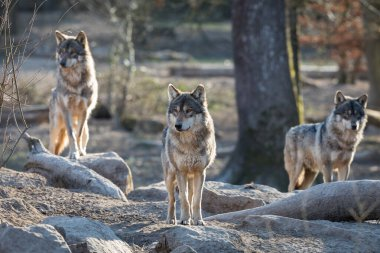
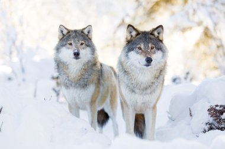

¿Que son los Lobos?
Desde las profundidades de los bosques hasta las vastas extensiones nevadas del norte, el lobo ha sido por siglos una criatura envuelta en misterio, respeto y a veces, miedo. Pero más allá de los mitos y leyendas, el lobo es un mamífero salvaje perteneciente a la familia de los cánidos, pariente cercano de nuestros perros domésticos.

Conocido científicamente como Canis lupus, este animal ha recorrido la Tierra desde tiempos ancestrales, adaptándose a entornos extremos y demostrando una inteligencia y organización social que fascina a científicos y amantes de la naturaleza por igual. Los lobos viven y cazan en manada, guiados por complejas jerarquías y una conexión profunda entre sus miembros.
Son depredadores eficientes, pero también animales sociales, comunicativos y leales. Su aullido, que resuena bajo la luna llena, no es solo un símbolo de lo salvaje, sino una forma de mantener unida a la familia.
¿Cuántas especies de lobos existen?
Aunque solemos imaginar al lobo como un único animal de pelaje gris y mirada penetrante, la realidad es que existen varias especies y subespecies que han evolucionado en distintos rincones del planeta. Cada una con sus propias características, colores, tamaños y formas de vida. A nivel general, el término "lobo" se asocia principalmente con el lobo gris (Canis lupus), pero este cuenta con más de 30 subespecies distribuidas por América del Norte, Europa y Asia.
